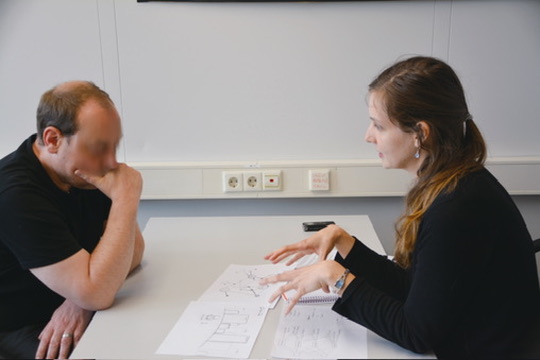
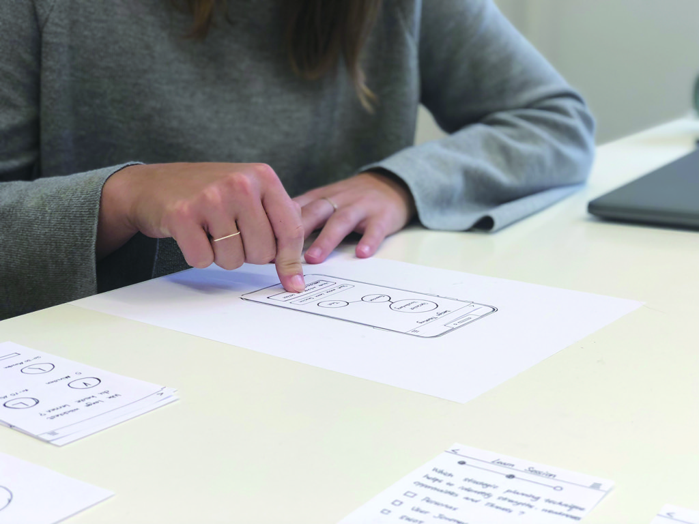

Sehr Gut, in German

I did my master's in Strategic Design at HfG Schwäbisch Gmünd. The programme sits where design, management and research meet — less about making one object well, more about framing the right problem, studying the people it touches, and arguing for what to build at all.
The class was mixed on purpose. I came from industrial design; others came from communication, interaction and fine art. Every project was a team, so every idea had to survive being explained to someone who saw the world differently. That is where I learned to research before designing, to test while things were still rough, and to carry a project from a loose question all the way to a business case.
Fun fact: the whole class was taught in German — I graduated with sehr gut, the top grade.
Graduation project — AI&U
My thesis was AI&U, a concept for a language-learning platform that adapts to the person using it. Most tools teach everyone the same way. AI&U starts from the other end: it learns who you are first — your level, your goals, when you focus, even your mood — and shapes the lessons around that.
I built it over five months with Chiara Mayer. The concept borrowed an idea from engineering, where a machine gets a live model of itself, and asked whether a learner could have one too. But most of the work was not theory. It was talking to people, building rough versions, and watching how they held up.
To make it tangible, we made a set of short films. Instead of listing features, we dropped AI&U into ordinary moments — a commute, a work call coming up — so an abstract concept felt like something you could actually reach for.
Behind the concept.
Behind the films sat five months of fieldwork. Before designing anything, we interviewed the people who knew the territory — language teachers, online-learning researchers, an engineer who builds digital twins for factories, an AI researcher at the German Research Center for Artificial Intelligence — and each conversation took a wrong assumption off the table. We kept ideas cheap: flowcharts, cut-paper screens and a mocked-up click path we could throw away without regret. Then we put the rough version in front of real learners and stopped talking — watching someone hesitate over a screen says more than asking what they think, and we rebuilt whatever made people pause for the wrong reasons.






The final result.
The final concept came together as something you could actually interact with. We designed it for both mobile and desktop, recorded a video walkthrough of the full flow, and built separate cases, each following a persona through their own reason to learn.


Demo day.
After the defense came demo day. We set up our stand and stood with it for two days, showing the work to whoever stopped by. People came from design studios, companies, and other colleges, and explaining the project again and again to strangers turned out to be its own kind of test.
What I took away.
The whole master was a deep dive into a different culture and a different way of studying. I came out of it having learned a lot, and not only about my field. Working in a team, across cultures and disciplines, with people who each saw design their own way, taught me as much as the projects did. That is the part I still carry into how I work.